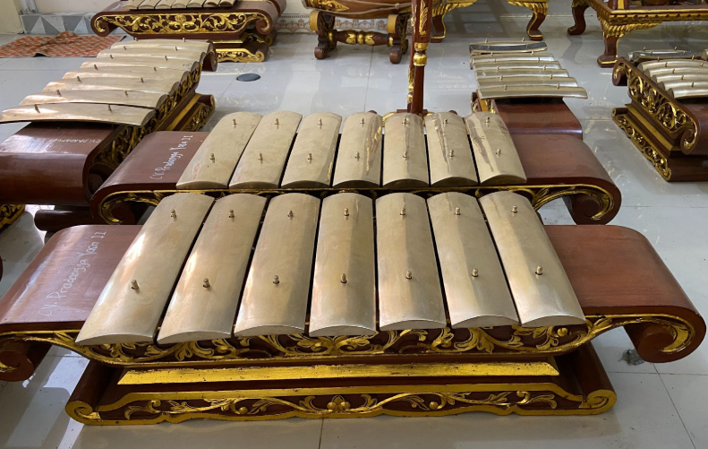

Gamelan
Gamelan adalah ansambel musik asli Indonesia yang terdiri dari instrumen logam seperti gong, saron, dan kenong. Material utamanya adalah perunggu untuk kualitas terbaik, namun kuningan dan baja sering digunakan sebagai alternatif yang lebih ekonomis. Berdasarkan mitologi Jawa, gamelan diciptakan oleh Sang Hyang Guru pada tahun 230 Masehi sebagai sarana komunikasi antar dewa. Meski dipengaruhi budaya Hindu-Buddha, bentuk instrumen ini mencapai kesempurnaan pada masa Kerajaan Majapahit dan tetap terjaga hingga kini. Sebagai pilar budaya Jawa, gamelan rutin digunakan dalam upacara adat dan pertunjukan wayang. Berkat nilai historisnya yang kuat, UNESCO resmi mengakui gamelan sebagai warisan budaya dunia asal Indonesia pada tahun 2014.